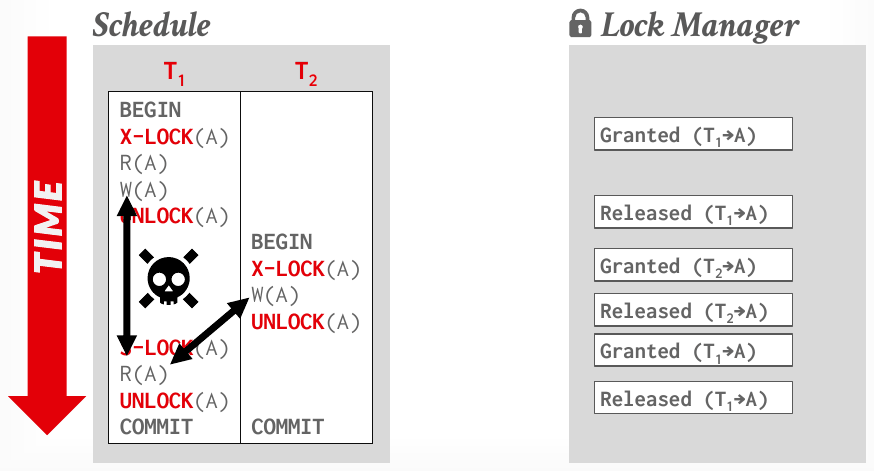
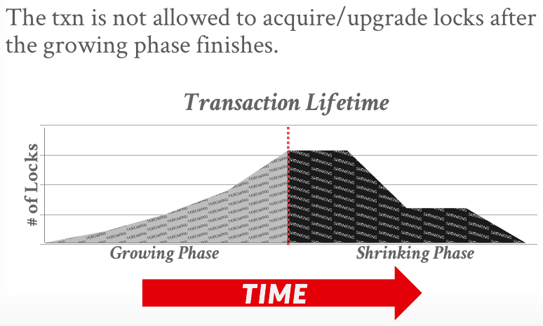
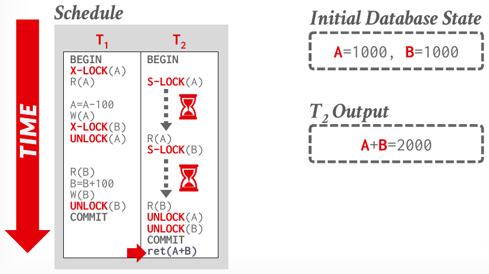
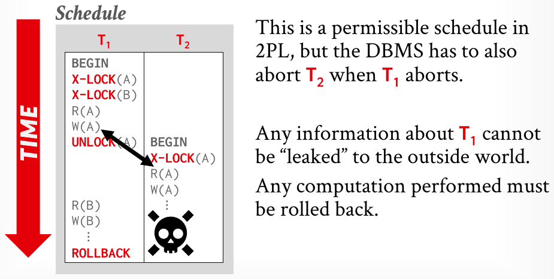
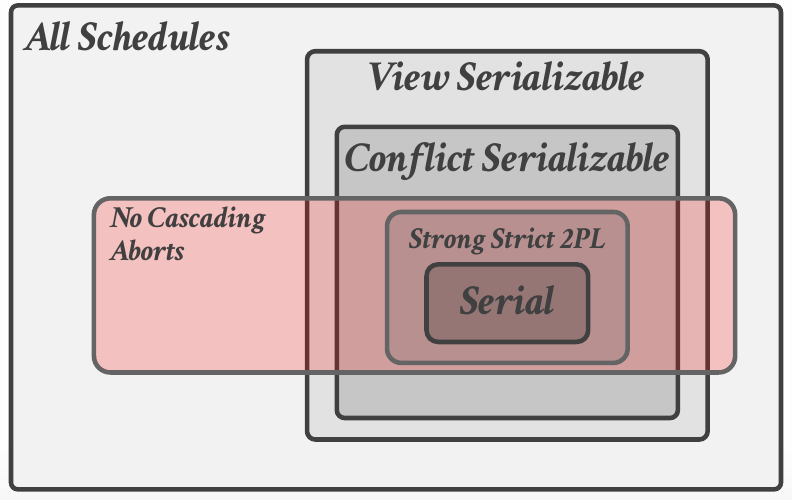
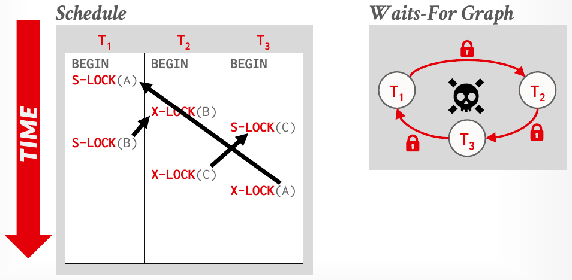
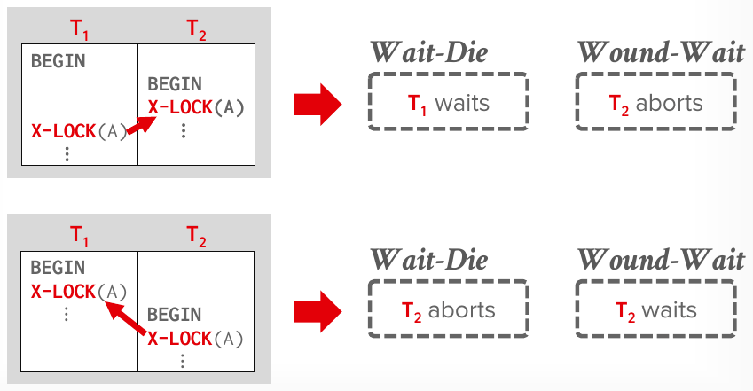

Database Internals in Go · Unit 7 · Lesson 2
Two-Phase Locking and Deadlocks
Run transactions under two-phase locking and strong strict two-phase locking, explain why the first guarantees conflict serializability but allows cascading aborts, and detect or prevent the deadlocks both can cause.
Lesson 1's dependency graph checks a schedule after the fact, and it needs the whole schedule to do so. A running DBMS never has that: transactions arrive one statement at a time. Slide 3 of Lecture #18 states the goal: guarantee that every execution schedule is serializable without knowing the entire schedule ahead of time. The solution is to protect database objects with locks and to follow a protocol about when locks may be taken and released. This lesson covers that protocol, two-phase locking, its stricter variant, and the deadlocks that any locking scheme has to handle.
Unit 3, Lesson 8: under latch crabbing, when is a B+tree node safe for an insert?
Unit 5, Lesson 5: what goes wrong in the Halloween problem?
Unit 1, Lesson 3: CMU's HW2 solution names one problem with log-structured storage, write amplification. Where does it come from?
Locks are not latches
Unit 3, Lesson 7 compared locks and latches using Goetz Graefe's table, which Lecture #18 repeats on slide 4. Latches separate workers, protect in-memory data structures for a critical section, and avoid deadlock by coding discipline. Locks separate transactions and protect database contents for the entire transaction. They live in a lock manager, and deadlocks between them are detected and resolved, with waits-for graphs, timeouts and aborts, rather than avoided.
The notes give an example of the difference. In a B+tree leaf scan, a thread holds latches on individual leaves only, one at a time, because that is all the tree's structure needs. Now suppose a transaction scans the leaves while another transaction writes two values somewhere in the table. To avoid seeing only one of the two writes, the scanning transaction has to lock the whole table, although at any moment it latches only the current leaf.
Lock modes and the lock manager
Slide 7 starts with two lock types. A shared lock (S-LOCK) is taken for reads, and an exclusive lock (X-LOCK) for writes. Their compatibility matrix has one compatible pair: several transactions can hold S locks on the same object at once, and an X lock is compatible with nothing.
| Held \ Requested | S | X |
|---|---|---|
| S | ✓ | × |
| X | × | × |
The notes add that real DBMSs have many more lock types built on these two; Lesson 4 adds the intention modes.
Transactions request locks, or upgrades from S to X, from the lock manager, which grants or blocks each request (slide 8). Transactions release locks, and the lock manager updates its internal lock table, which records which transactions hold which locks and which transactions are waiting for them. The notes point out that the lock table doesn't need to be durable: any transaction still running when the DBMS crashes is aborted anyway.

Slide 9 shows that locks alone are not enough. In the notes' words, locks must be complemented by a concurrency control protocol that decides when they may be taken and released.
#18 Two-Phase Locking, "Introduction to locking" (0:41), slides 3–9: why locks, locks versus latches, S and X locks, the lock manager, and the schedule that locking alone gets wrong.
Two-phase locking
Two-phase locking (2PL) is a concurrency control protocol that decides at runtime whether a transaction may access an object. It doesn't need to know ahead of time all the queries a transaction will execute (slide 10). The notes classify it as pessimistic. Every transaction goes through two phases (slide 11):
- In the growing phase, the transaction requests the locks it needs from the lock manager, which grants or denies them.
- In the shrinking phase, the transaction may only release or downgrade locks it acquired earlier. It can't acquire new ones.
The notes say a transaction enters the shrinking phase immediately after it releases its first lock. From then on, acquiring a lock or upgrading one is a 2PL violation (slides 12–13). Nothing forces the shrinking phase to start at commit: a 2PL transaction may release locks while it is still running, as long as it acquires none afterwards.

Slide 15 states the main result: 2PL on its own is sufficient to guarantee conflict serializability, because it generates schedules whose precedence graph is acyclic. The HW5 solution points to the order in which locks are acquired. To see why, take an edge Ti → Tj on object A. The two operations conflict, so at least one of them needs an X lock, and Tj can't lock A until Ti has released it. Ti releases locks only in its shrinking phase, after its last acquisition, and Tj acquires A in its growing phase, before its own last acquisition. So every edge goes from a transaction whose growing phase ended earlier to one whose growing phase ended later. A cycle would need a transaction to end its growing phase before itself, which is impossible.
The bank transfer, with and without 2PL
Slides 20 to 22 use a new pair of transactions. With A = B = 1000, T1 moves $100 from DJ Cache's account A to his bookie's account B, and T2 returns A + B. Any serial order gives 2000.
- Without 2PL (slide 21), T1 takes X(A), debits A and releases A before it locks B. T2 then reads A = 900, and it reads B = 1000 before T1 gets its X lock on B. T2 returns 1900.
- With 2PL (slide 22), T1 takes X(B) before it releases A, because it may not acquire anything after its first release.

What 2PL costs
Slide 17 lists three observations about 2PL:
- Some schedules are serializable but not allowed by 2PL, because locking limits concurrency. The slide adds that most DBMSs prefer correctness before performance. Lesson 1's Example #2 is such a schedule; the exercises below ask why.
- 2PL may still have dirty reads. The solution is strong strict 2PL, next.
- 2PL may lead to deadlocks. The solution is detection or prevention, at the end of this lesson.
Cascading aborts and strong strict 2PL

Slide 16 names the problem. A cascading abort happens when aborting one transaction forces the DBMS to abort others that read its writes. The schedule above is permissible under 2PL, yet the DBMS has to abort T2 when T1 aborts, and the next build of the slide labels the result "Wasted work!". T2's read of A is a dirty read, which is why 2PL "may still have dirty reads".
Slide 19 defines the property that rules this out. A schedule is strict if a value written by a transaction is not read or overwritten by other transactions until that transaction finishes. A strict schedule has two advantages: it doesn't incur cascading aborts, and the DBMS can reverse an aborted transaction's changes by restoring the original values of the tuples it modified.
Strong strict two-phase locking (SS2PL), also called rigorous 2PL, gets there by moving every release to the end (slide 18): a transaction may release its locks only after it has ended, by committing or aborting. It allows only conflict-serializable schedules, but the slide warns that it is often stronger than some applications need. In its lifetime chart, the shrinking phase is a single vertical drop at the end of the transaction. In the bank example (slide 23), T1 holds X(A) and X(B) until it commits, T2 waits, and T2 returns 2000.

Strict 2PL in other sources
The Lecture #18 notes also describe a "strict 2PL" that releases only shared locks during the shrinking phase, and say it reintroduces dirty reads and cascading aborts. That contradicts slide 19's definition of a strict schedule. This course uses only the slides' strong strict (rigorous) 2PL. HW5's official solution says "strict 2PL" in Q1(a)ii; there it means strong strict 2PL.
#18 Two-Phase Locking, "Two-phase locking protocol" (9:02), slides 10–24: the two phases, cascading aborts, strong strict 2PL, the 1900 and 2000 examples and the universe of schedules.
Deadlocks
Slide 26 shows a deadlock between two transactions. T1 takes X(A) and T2 takes S(B); both are granted. Then T2 requests S(A), which is denied because T1 holds X(A), and T1 requests X(B), which is denied because T2 holds S(B). Each waits for the other forever. A deadlock is a cycle of transactions waiting for locks to be released by each other (slide 27). Strong strict 2PL doesn't help: both transactions are still in their growing phases. There are two ways to deal with deadlocks: detect them, or prevent them.
Detection
For detection (slide 28), the DBMS builds a waits-for graph. Its nodes are transactions, and it has an edge from Ti to Tj if Ti is waiting for Tj to release a lock. The system periodically checks the graph for cycles and decides how to break them. The trade-off is between breaking deadlocks fast and spending resources looking for them. The notes add that a background thread usually does the check, and it needs no latches while building the graph: a deadlock it misses in one pass is still there in the next.

Don't confuse this graph with Lesson 1's dependency graph. A dependency graph's edge means "comes before in any equivalent serial order"; a waits-for graph's edge means "is blocked by, right now".
When it finds a deadlock, the DBMS picks a victim transaction and rolls it back to break the cycle (slide 30). The victim either restarts or aborts, depending on how the application invoked it; aborting is more common. There is a trade-off between how often the DBMS checks and how long transactions wait before a deadlock is broken. Slide 31 lists what victim selection can consider: age (lowest timestamp), progress (least or most queries executed), the number of items already locked, and the number of transactions that would have to be rolled back with it. It should also consider how many times a transaction has been restarted, to prevent starvation. The rollback can be complete, telling the application the transaction aborted, or partial, back to a savepoint, after which the DBMS re-executes the undone queries (slide 32).
Prevention
Prevention avoids building the graph (slide 33). When a transaction requests a lock that another transaction holds, the DBMS kills one of the two on the spot, so a cycle never forms. Each transaction gets a timestamp when it starts, and the timestamps give priorities; for example, an older timestamp means higher priority, so T1 > T2 (slide 34). There are two schemes:
- Wait-die ("old waits for young"): if the requester has higher priority than the holder, the requester waits. Otherwise the requester aborts.
- Wound-wait ("young waits for old"): if the requester has higher priority than the holder, the holder aborts and releases the lock. Otherwise the requester waits.
The notes give a way to remember them: in scheme "X-Y", a higher-priority requester does X, and a lower-priority requester does Y.

Slide 36 answers why these schemes guarantee no deadlocks: transactions only wait for locks in one direction. Under wait-die only older transactions wait for younger ones, and under wound-wait only younger ones wait for older ones, so a waiting chain can't loop back to where it started. A restarted transaction keeps its original timestamp. Otherwise it would be young again after every restart and could be killed over and over, starved of the resources it needs.
#18 Two-Phase Locking, "Lock management and deadlocks" (34:49), slides 26–36: the two-transaction deadlock, waits-for graphs, victim selection and rollback, then wait-die and wound-wait.
Where 2PL lives in BusTub and the Go port
Slide 52 says 2PL is used in almost every DBMS, but you won't implement it in this course. BusTub at d49b823 still contains a lock manager from an older version of the project (src/include/concurrency/lock_manager.h, with comments from Spring 2023). It is disabled: src/include/common/config.h defines DISABLE_LOCK_MANAGER, and the build doesn't compile lock_manager.cpp. It is also out of date: it refers to isolation levels and transaction states, such as GROWING and SHRINKING, that no longer exist in transaction.h. Read it only as a picture of what a 2PL lock manager looks like: lock modes, a FIFO request queue per object, and a waits-for graph with AddEdge, HasCycle and RunCycleDetection.
The Go port has no lock manager at all. Project 4 builds optimistic multi-version concurrency control instead. There, a transaction that tries to modify a tuple that another uncommitted transaction has modified is aborted rather than made to wait. Lesson 3 covers the optimistic side, and Lessons 5 and 6 the multi-version side.
Work it out
Decide each one on paper before opening the result.
-
What to think about
T3 needs A while T1 is still running. What must T1 have done with its lock on A by then, and what does that rule out for T1 afterwards?
The method
T1 must release A before T3 reads it, which starts T1's shrinking phase. So T1 must already hold its lock on B at that moment. Then check what T2 does with B before T1 uses it.
The result
2PL can't produce it. T1 must release A before T3:R(A), so it must lock B before that release. But T2 reads and writes B after T3's operations and before T1's, and T2 can't get B while T1 holds it. This is slide 17's point: a serializable schedule that locking rules out.
-
What to think about
Each scheme acts at the moment a request is blocked. Which request is blocked first, and who is older, the requester or the holder?
The method
The first blocked request is T2's, for A held by T1: a younger requester. If T2 is still around afterwards, the second is T1's, for B held by T2: an older requester.
The result
Wait-die: T2 is younger than the holder, so it dies at its first request. T2's locks are released and T1 gets X(B). Wound-wait: T2 is younger, so it waits for A. Then T1, the older one, requests B and wounds T2, which aborts and releases B. Both schemes abort T2, at different moments. If T2 restarts, it keeps its original timestamp.
The homework behind these questions
The questions marked HW5 come from CMU's Homework #5: Question 1, with the original figures. Work each one out on paper first, then click the option you got. The quiz tells you at once whether it matches CMU's official answer, and explains why. To compare your working step by step, open the official solutions for Question 1.
Check your understanding
HW5 Q1(a)i, true or false: "2PL is an optimistic concurrency control protocol." Which statement matches the official answer?
HW5 Q1(a)ii, true or false: "Strong strict 2PL prevents the occurrence of cascading aborts and inherently avoids deadlocks without the need for additional prevention or detection techniques." Which statement matches the official answer?
HW5 Q1(a)iii: does regular (not strong strict) 2PL guarantee conflict-serializable schedules?
The next question uses HW5 Question 1(b)'s schedule from Lesson 1, with time increasing from left to right. Its dependency graph has the cycle T1 → T2 → T3 → T1.
| t1 | t2 | t3 | t4 | t5 | t6 | t7 | t8 | t9 | t10 | |
|---|---|---|---|---|---|---|---|---|---|---|
| T1 | W(B) | W(A) | ||||||||
| T2 | R(C) | R(A) | ||||||||
| T3 | W(B) | W(C) | R(D) | |||||||
| T4 | R(D) | W(B) | W(A) |
HW5 Q1(b)v: is this schedule possible under regular 2PL?
T1 holds an X lock on A, and T2 and T3 each hold an S lock on B. Then T1 requests X(B), and T2 requests S(A). What does the waits-for graph contain?
Primary sources: CMU 15-445/645 Fall 2025 Lecture #18 slides 2–36 and 52 and notes (sections 1–3); Lecture #19 slide 4; Homework #5 Question 1, parts (a)i to (a)iii and (b)v, and its official solutions; BusTub src/include/concurrency/lock_manager.h, src/include/common/config.h and src/concurrency/CMakeLists.txt at commit d49b823; the Project #4 writeup (Task 3.4).